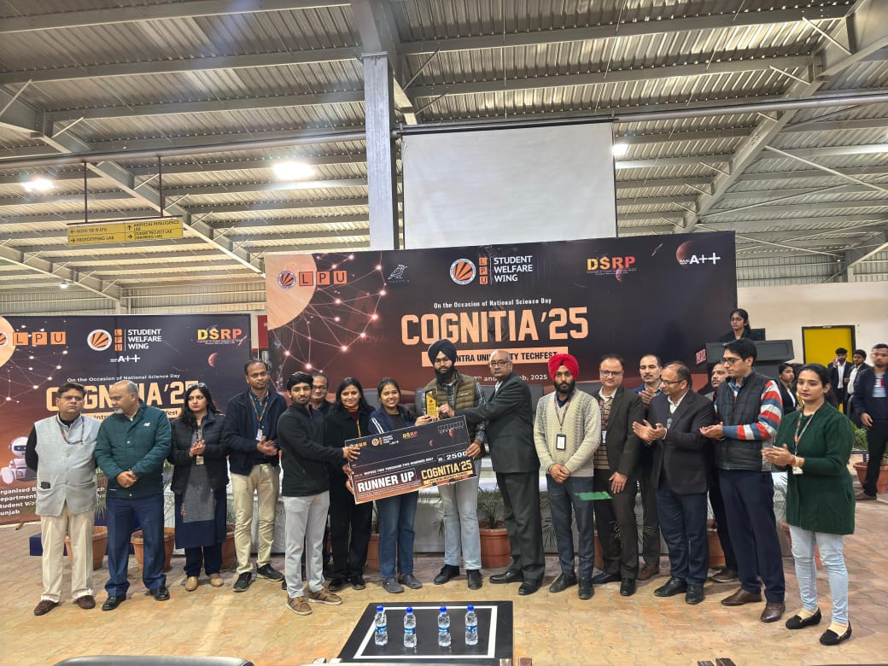
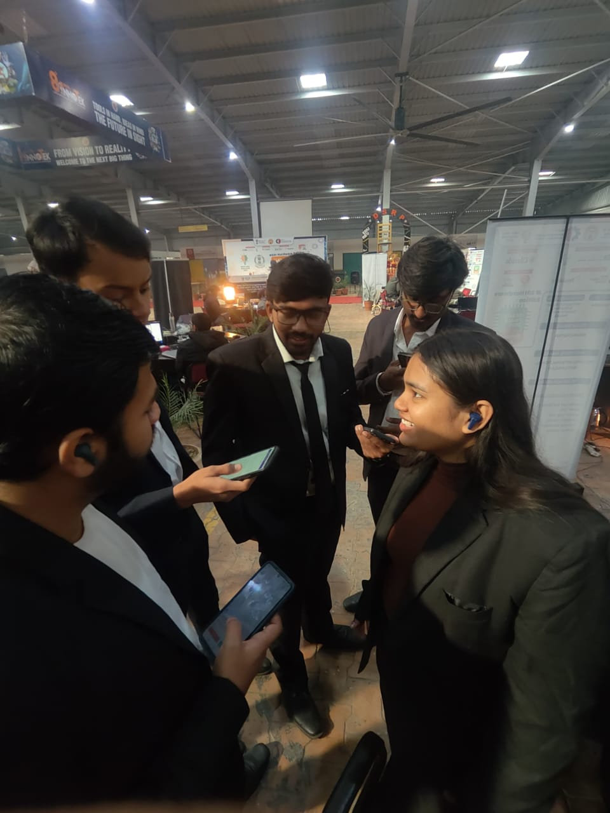
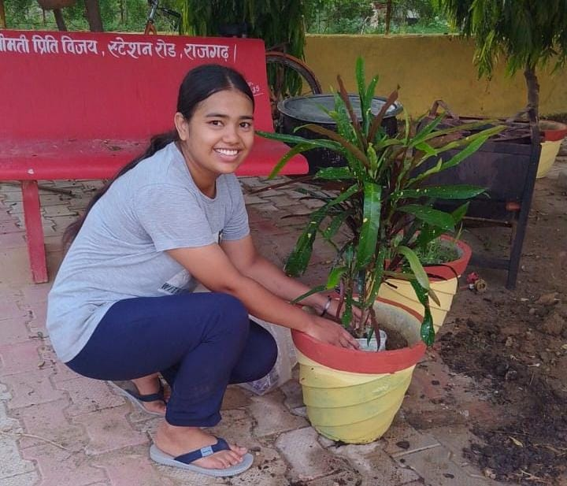

Participated in college-level hackathons applying data-driven thinking and
software engineering fundamentals.
🏆 Incognitia Hackathon – 1st Runner-Up
Collaborated in a team to design and implement a solution under strict
time constraints, strengthening problem-solving and teamwork skills.
Cognitia’25 • 2025

Core member of the SPARK Student Club, involved in organizing and managing
large-scale technical events.
Served as a Senior Executive Member during Smart India Hackathon,
gaining hands-on experience in coordination, logistics, and team management.
SPARK Club • Technical Events

Actively contributed to social initiatives with Lions Club,
focusing on community development and sustainability.
Participated in plantation drives, food distribution, animal welfare,
and on-ground volunteer work.
Lions Club • Community Initiatives

I consistently work on strengthening my technical foundations to prepare for real-world Data Science and Software Engineering roles.
Improving problem-solving ability and coding efficiency through practice.
Learning ML concepts, model building, and working with structured data.
Writing clean code, version control, and modular application design.
Applying concepts through hands-on projects to bridge theory and practice.